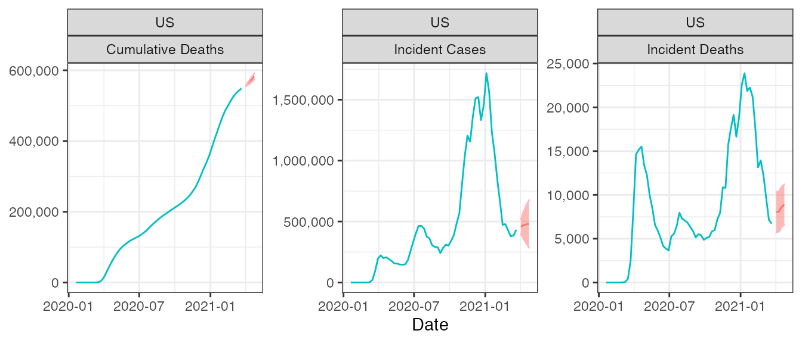

focustools.RmdHere we provide an example of how to use focustools to generate forecasts for COVID-19 Forecast Hub targets via time series approaches. First, load the focustools package and other ancillary packages.
First, let’s retrieve COVID-19 data from the JHU source. Note that the get_cases() and get_deaths() functions are executed separately, then joined and converted to a tsibble. Note that granularity="state" would pull in data at the state and territory level.
## get data at the national scale from jhu source usac <- get_cases(source="jhu", granularity = "national") usad <- get_deaths(source="jhu", granularity = "national") ## use the focustools helper to prep the tsibble format usa <- dplyr::inner_join(usac, usad, by = c("location", "epiyear", "epiweek")) %>% make_tsibble(chop=TRUE)
With the data prepared, we can now fit the models. In this case, we’ll fit two models. One will be an ARIMA of incident cases, with parameters automatically optimized. For more details see ?fable::ARIMA. In this case we will restrict the order of non-seasonal auto-regressive terms, order of integration for non-seasonal differencing, and order of non-seasonal moving average terms. The other model will use the three week lagged incident case counts to predict incident deaths:
With the model fit objects created, we can generate forecasts (including point and quantile estimates) for the outcomes of interest at an arbitrary horizon (here, 4 weeks). Note that given the model we have chosen for the incident deaths outcome, we do need to make sure to generate the incident case forecast first so that we can retrieve point estimates for future cases, which will be passed into the incident deaths forecast:
## generate incident case forecast forc.icases <- ts_forecast(fits.icases, outcome = "icases", horizon = 4) ## need to get future cases to pass to ideaths forecast futr.icases <- ts_futurecases(usa, forc.icases, horizon = 4) # Forecast incident deaths based on best guess for cases forc.ideaths <- ts_forecast(fits.ideaths, outcome = "ideaths", new_data = futr.icases)
We can use the forecasts of incident deaths to infer cumulative deaths. The ts_forecast() function is flexible enough to switch methods internally, requiring a “inc_forecast” parameter if either “cdeaths” or “ccases” is passed as the “outcome” for the forecast:
## generate cumulative death forecast forc.cdeaths <- ts_forecast(outcome = "cdeaths", .data = usa, inc_forecast = forc.ideaths)
Prior to submitting these forecasts to the COVID-19 Forecast Hub we need to prepare them in the canonical submission format. Data prep in format_for_submission includes naming targets appropriately and ensuring that target dates adhere to epidemiological week format:
## create submission object submission <- list(format_for_submission(forc.icases, target_name = "inc case"), format_for_submission(forc.ideaths, target_name = "inc death"), format_for_submission(forc.cdeaths, target_name = "cum death")) %>% reduce(bind_rows) %>% arrange(target) head(submission) #> # A tibble: 6 x 7 #> forecast_date target target_end_date location type quantile value #> <date> <glue> <date> <chr> <chr> <dbl> <int> #> 1 2021-03-29 1 wk ahead cum … 2021-04-03 US point NA 556853 #> 2 2021-03-29 1 wk ahead cum … 2021-04-03 US quant… 0.01 548945 #> 3 2021-03-29 1 wk ahead cum … 2021-04-03 US quant… 0.025 550191 #> 4 2021-03-29 1 wk ahead cum … 2021-04-03 US quant… 0.05 551262 #> 5 2021-03-29 1 wk ahead cum … 2021-04-03 US quant… 0.1 552497 #> 6 2021-03-29 1 wk ahead cum … 2021-04-03 US quant… 0.15 553330 tail(submission) #> # A tibble: 6 x 7 #> forecast_date target target_end_date location type quantile value #> <date> <glue> <date> <chr> <chr> <dbl> <int> #> 1 2021-03-29 4 wk ahead inc … 2021-04-24 US quanti… 0.8 11774 #> 2 2021-03-29 4 wk ahead inc … 2021-04-24 US quanti… 0.85 12436 #> 3 2021-03-29 4 wk ahead inc … 2021-04-24 US quanti… 0.9 13268 #> 4 2021-03-29 4 wk ahead inc … 2021-04-24 US quanti… 0.95 14503 #> 5 2021-03-29 4 wk ahead inc … 2021-04-24 US quanti… 0.975 15574 #> 6 2021-03-29 4 wk ahead inc … 2021-04-24 US quanti… 0.99 16819
Lastly, we can validate the submission. The object must be written to a file and then validated with validate_forecast(), which wraps a python function developed and maintained by the COVID-19 Forecast Hub organizers.
We can use plot_forecast() to visualize these forecasts:
plot_forecast(.data=usa, submission=submission)

And we can use submission_summary() to produce a summary of the forecasts for each target (cumulative deaths, incident cases, incident deaths):
subsum <- submission_summary(.data=usa, submission=submission) subsum #> $counts #> $counts$cdeaths #> # A tibble: 1 x 6 #> location Previous `1w ahead` `2w ahead` `3w ahead` `4w ahead` #> <chr> <dbl> <dbl> <dbl> <dbl> <dbl> #> 1 US 548829 556853 564956 573592 582506 #> #> $counts$icases #> # A tibble: 1 x 6 #> location Previous `1w ahead` `2w ahead` `3w ahead` `4w ahead` #> <chr> <dbl> <dbl> <dbl> <dbl> <dbl> #> 1 US 432748 457428 470287 476987 480478 #> #> $counts$ideaths #> # A tibble: 1 x 6 #> location Previous `1w ahead` `2w ahead` `3w ahead` `4w ahead` #> <chr> <dbl> <dbl> <dbl> <dbl> <dbl> #> 1 US 6728 8024 8102 8636 8914 #> #> #> $perc_diff #> $perc_diff$cdeaths #> # A tibble: 1 x 5 #> location `1w ahead` `2w ahead` `3w ahead` `4w ahead` #> <chr> <chr> <chr> <chr> <chr> #> 1 US 1.5% 1.5% 1.5% 1.6% #> #> $perc_diff$icases #> # A tibble: 1 x 5 #> location `1w ahead` `2w ahead` `3w ahead` `4w ahead` #> <chr> <chr> <chr> <chr> <chr> #> 1 US 5.7% 2.8% 1.4% 0.7% #> #> $perc_diff$ideaths #> # A tibble: 1 x 5 #> location `1w ahead` `2w ahead` `3w ahead` `4w ahead` #> <chr> <chr> <chr> <chr> <chr> #> 1 US 19.3% 1% 6.6% 3.2%
We could optionally coerce this structure into a table. For counts:
| target | location | Previous | 1w ahead | 2w ahead | 3w ahead | 4w ahead |
|---|---|---|---|---|---|---|
| cdeaths | US | 548829 | 556853 | 564956 | 573592 | 582506 |
| icases | US | 432748 | 457428 | 470287 | 476987 | 480478 |
| ideaths | US | 6728 | 8024 | 8102 | 8636 | 8914 |
Or percent difference:
| target | location | 1w ahead | 2w ahead | 3w ahead | 4w ahead |
|---|---|---|---|---|---|
| cdeaths | US | 1.5% | 1.5% | 1.5% | 1.6% |
| icases | US | 5.7% | 2.8% | 1.4% | 0.7% |
| ideaths | US | 19.3% | 1% | 6.6% | 3.2% |